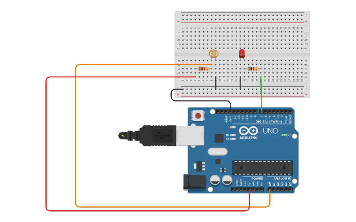

PROJECT 08: AUTO NIGHT LAMP
Home Automation Basics
Mission Brief
Automation is about making things happen without human intervention. In this project, you will build a smart street light prototype that detects darkness using an LDR and turns on an LED automatically.
Key Components
- Arduino Uno R3
- LDR (Light Dependent Resistor)
- 10kΩ Resistor (Voltage Divider)
- White LED
- 220Ω Resistor (for LED)
Circuit Diagram

Pin Connections
| Arduino Pin | Component Connection |
|---|---|
| Pin A0 | Junction of LDR & 10kΩ Resistor |
| 5V | Other leg of LDR |
| GND | Other leg of 10kΩ Resistor |
| Pin 13 | Positive Leg of Street Light (LED) |
Step-by-Step Instructions
- Build the LDR Sensor circuit (Voltage Divider) exactly as you did in Project 4.
- Connect the sensor junction (middle point) to Analog Pin A0.
- Connect a White LED to Pin 13 (remember the 220Ω resistor!).
- Upload the code below.
- Open Serial Monitor to check the light values in your room.
Arduino Code
/* Project 8 - Automatic Night Lamp
* Turns LED on when LDR sensor detects darkness.
*/
const int sensorPin = A0;
const int lightPin = 13;
// CHANGE THIS value based on your room's light level!
int threshold = 400;
void setup() {
pinMode(lightPin, OUTPUT);
Serial.begin(9600);
}
void loop() {
// Read light level (0-1023)
int reading = analogRead(sensorPin);
// Debugging: Show value on computer
Serial.print("Light Level: ");
Serial.println(reading);
// Logic: Lower value means DARKER
if (reading < threshold) {
digitalWrite(lightPin, HIGH); // Turn ON Street Light
} else {
digitalWrite(lightPin, LOW); // Turn OFF Street Light
}
delay(500); // Check every half second
}
How It Works
- Calibration Logic:
-
The Threshold:
This is the most critical part. Every room has different lighting. If your LED stays on even when it's bright, your `threshold` number is too high. Decrease it. -
Serial Monitor:
We print the `reading` so you can see exactly what number represents "Dark" vs "Bright" in your specific environment. - Reverse Logic:
-
Darkness Check:
Unlike a button where HIGH = ON, here `reading < threshold` (Low Value) means it is DARK, so we turn the light ON.
Expected Output
Light: The LED stays OFF.
Shadow/Dark: When you cover the sensor with your hand, the LED automatically snaps ON. It mimics a real street lamp.
What You Learned
- How to build a self-regulating automated system.
- The importance of Calibration in sensor projects.
- Using comparison operators (`<`, `>`) to make decisions based on analog data.
Next Steps / Extension Ideas
Add a potentiometer to allow the user to manually adjust the sensitivity (Threshold) of the night light without having to rewrite the code!